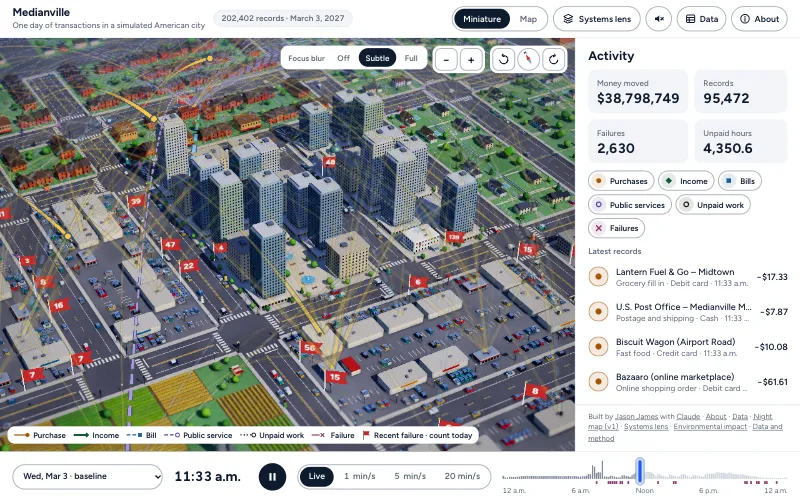

Medianville
One simulated day in Medianville, an invented American city of about 100,000 people, played back record by record (purchases, bills, paychecks, bus rides, failed attempts) on a night map, a 3D miniature town and a printed map sheet.
